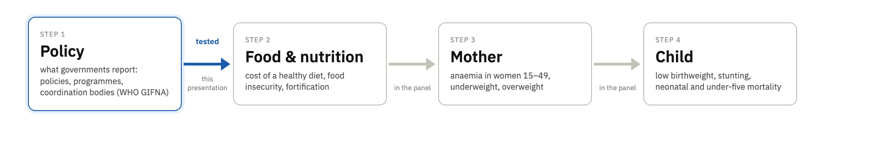
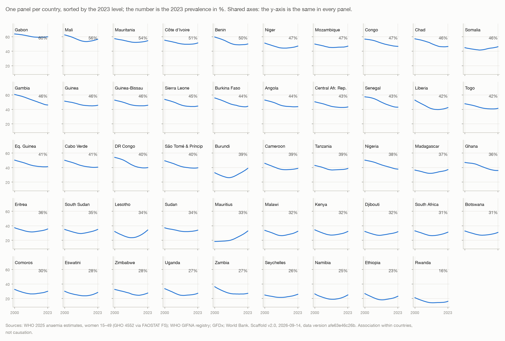
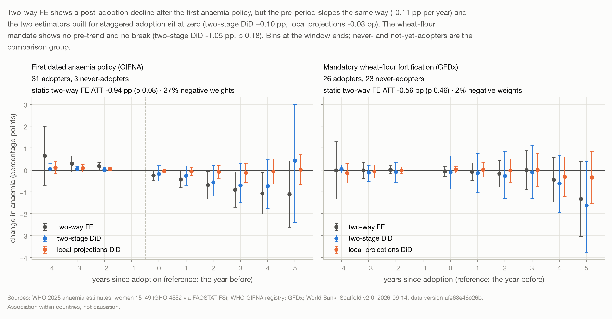
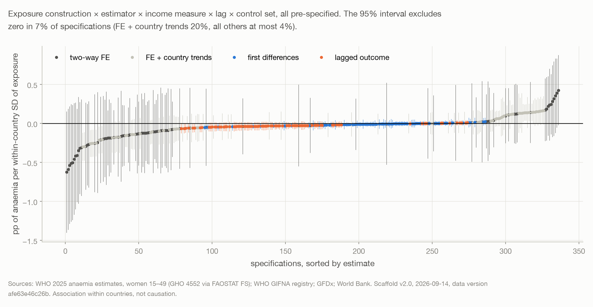

What we did, on one page
A country-year panel for sub-Saharan Africa, a policy dose read straight from the WHO registry, a ladder of tests around one association, and an honest reading of a null. Every number below is in the report's stats files under the tag shown in brackets.
The question and the chain
Nutrition in the first thousand days depends on the mother, and anaemia is the most widely measured marker of her nutrition. We asked whether a country's record of nutrition policy moves its anaemia rate. The chain runs policy → food and nutrition → mother → child; we tested the first link against the mother's anaemia and kept the rest in the panel.

Where is anaemia high, and which way is it moving?
Does the policy record move with anaemia inside a country?
Who beats their context, and does their policy record look different?
The panel
One guarded script joins the sources on country codes, refuses duplicate keys, undeclared gaps and an incomplete grid, hashes every input, and stamps the data version on every result. Only 39 of the 174 columns enter a model; the rest are there so that every alternative and every check could be run from one table.

Finding 1 · Where it is most concerning
Across the 49 countries the unweighted mean fell from 44% in 2000 to 37% in 2015, then rose to 39% by 2023; anaemia is higher in 2023 than in 2015 in 37 of 49 countries. Levels run from 16% in Rwanda to 60% in Gabon. A concern score over 194 countries, built from whether an indicator sits in the worst quarter and whether it is failing to improve, put Burundi, Jordan, Somalia, Lesotho and Lebanon at the top: three of five in this region, which is where we built the panel. Income alone explains under five per cent of the spread between countries.

Finding 2 · The policy record does not move anaemia, measurably
The dose is the number of anaemia-cluster policies in force in a country, dated by their adoption years and lagged three years. Comparing each country with itself over time, with country and year effects and log income, one more policy in force is followed by −0.21 percentage points of anaemia, 95% interval −0.62 to +0.20. The estimate stays at zero with other lags, other income measures, malaria, fertility, urbanisation, sanitation and unemployment as controls, in first differences, with a lagged outcome instead of country effects, and on survey-anchored years only. [02_fe→spec_A, sensitivity]

Around each country's first anaemia policy, a naive two-way fixed-effects event study shows a decline, but the pre-period slopes the same way and 27% of the estimate's weights are negative; the two estimators built for staggered adoption, two-stage difference-in-differences and local-projections difference-in-differences, sit at zero. Around wheat-flour fortification mandates there is no pre-trend and no break under any estimator. [02b_event]

The null is a bound, not an absence. With a pre-specified smallest effect of interest of one percentage point per within-country standard deviation of the dose, the equivalence test passes (p 0.031): benefits larger than about half a point of anaemia per policy are ruled out, and the design could not have detected anything smaller than about one point per within-country step of the dose. Across 336 pre-specified specifications, 7% exclude zero. Adding the policy count to a model that never saw a country does not lower its prediction error. [02_fe→bounds; 02c_spec; 03_loco]

Finding 3 · Who beats their context
A cross-country model with year effects, log income, malaria incidence, fertility, urbanisation, basic sanitation, UNICEF sub-region and terrain explains 81% of the differences in levels, where income alone explains 6%. Ranked against what that context predicts, Nigeria, Namibia, Cameroon, Ghana, Liberia, DR Congo, Ethiopia and Zambia sit lowest; Mozambique, Burundi, Gabon, Mali, Tanzania, Madagascar, Eswatini and Comoros sit highest. The two groups have the same policy record on the books: 4.5 versus 2.8 dated anaemia policies in force, and no exposure separates them. A screening device, not a verdict. [04_residuals]

Obstacles, and what they changed
Undated programme rows made the dose policies only. Modelled outcomes made a survey-anchored re-run the honest check. The mislabelled income file became a pinned World Bank pull with provenance. The empty food-insecurity series became three-year averages.
Where every number comes from
The report results/RESULTS.md tags each number [E:script→key]; the key lives in results/stats/<script>.json, written by the script named. The panel's data version, afe63e46c26b, is the hash of the panel and of every input that built it, recorded in MANIFEST.json. Change one input and the version changes with it.